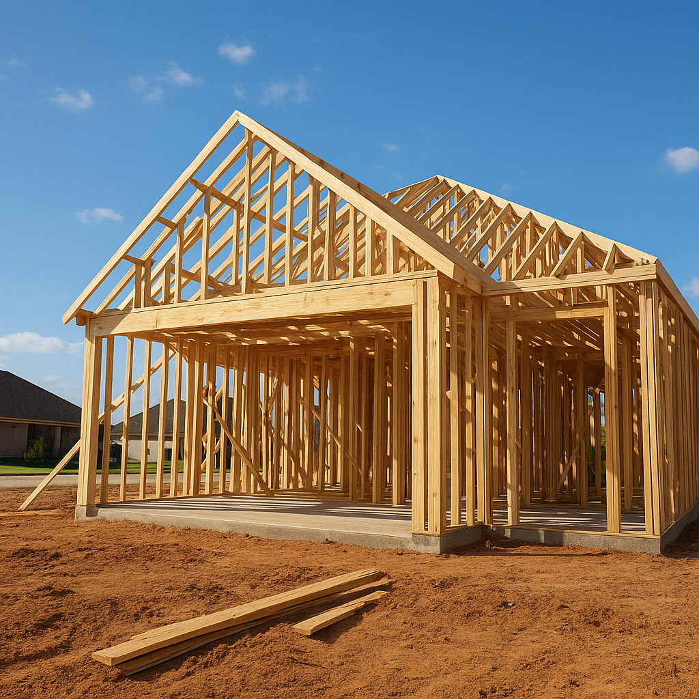

If you're shopping new construction in Forney, Terrell, or Royse City right now, there's a good chance the lot you're looking at sits inside a USDA-eligible boundary without you knowing it — and that fact alone can change the math on a brand-new home by tens of thousands of dollars in required cash. Yes, you can use a USDA loan on new construction in Texas. But the rules are specific: the home has to sit inside a USDA-eligible rural or suburban area, the builder and the finished home have to clear a few extra checkpoints, and the loan process runs on a slightly different clock than a standard FHA or conventional new build. I close these loans regularly in the Forney and Terrell growth corridors, so here's exactly how it works, priced out with real numbers.
Can I Really Use a USDA Loan to Buy a New-Construction Home in Forney or Terrell?
Most of what you'll find online about "USDA construction loans" describes a ground-up, construction-to-permanent product — you buy raw land, hire a USDA-approved builder, and roll the land, build cost, and permanent mortgage into a single closing. That product exists, but it's a small slice of what I actually see in Kaufman and Rockwall counties. The far more common path for buyers in Forney and Terrell is a standard USDA purchase loan on a home a production builder has already built or is finishing inside a subdivision — the same way you'd buy any resale home, just with a newer certificate of occupancy. If you're watching framing go up in a new Forney section and wondering whether USDA applies, in almost every case the answer is: you're buying the finished product, not financing the construction itself, and that's a simpler loan to close.
Does My New-Construction Home Have to Be in a USDA-Eligible Area?
Yes, and this is where I catch buyers off guard the most. USDA eligibility is tied to the property's address, not the city as a whole. Forney (75126), Royse City (75189), and Terrell (75160) are USDA-eligible, along with parts of Kaufman, Rockwall, and Ellis counties — which is exactly why so much new-construction activity is happening in that corridor right now. Garland, Mesquite, Dallas, Plano, Frisco, McKinney, Allen, Richardson, Fort Worth, Arlington, and Irving sit inside the ineligible urban core, so a new-construction home in any of those cities won't qualify no matter how rural the street feels. Because eligibility boundaries can split a single subdivision in half, I always run the exact address through the USDA eligibility map before a buyer writes an offer — not just the ZIP code.
What Do Builders Need to Qualify for USDA New-Construction Financing?
For the standard purchase path — buying a home that's already built or close to finished — the requirements sit on the property, not the builder's résumé. The builder has to provide a new-home warranty, the home needs a final inspection or certificate of occupancy before I can close your loan, and if the home isn't 100% finished when you go under contract, the appraiser completes an "as-complete" appraisal based on the approved plans and specs rather than the current framing. For the rarer ground-up construction-to-permanent loan, USDA vets the builder directly: a minimum of two years building single-family homes, current licensing, and proof of at least $500,000 in commercial liability insurance. Almost every buyer I work with in Forney and Terrell is on the first path, financing a home a production builder is already committed to finishing on a set schedule.
Does USDA Require Extra Inspections on a New Build Compared to FHA or Conventional?
Not extra physical inspections — USDA doesn't send more people out to the house than FHA does. What USDA adds is an extra approval layer in underwriting. Here's how the three programs actually compare on a new-construction purchase:
| Requirement | USDA | FHA | Conventional |
|---|---|---|---|
| Down payment | 0% | 3.5% (min. 580 FICO) | 3%–20% |
| Upfront fee (financeable) | 1.0% guarantee fee | 1.75% UFMIP | None (unless PMI applies) |
| Ongoing monthly fee | 0.35%/yr annual fee | 0.55%–0.75%/yr MIP | PMI if <20% down; removable at 20% equity |
| New-build final inspection | Required (certificate of occupancy) | Required (certificate of occupancy) | Required (certificate of occupancy) |
| Extra approval step | Rural Development conditional commitment | None | None |
| Property location restriction | USDA-eligible rural/suburban area only | None | None |
The line that actually slows a USDA new build down is the Rural Development conditional commitment — after I finish underwriting your file, it still has to route through USDA's Rural Development office for sign-off before we get a final clear-to-close. FHA and conventional loans don't have that step at all, which is the real difference buyers feel, not extra walk-throughs at the house.
What Does a USDA Loan Actually Cost on a New-Construction Home in Forney?
Let's price out a realistic Forney new-construction purchase at today's numbers. Say you're buying a new-build home for $325,000 at a 7.0% 30-year fixed rate, with 0% down.
- Base loan amount: $325,000
- 1.0% upfront guarantee fee (financed in): $3,250
- Total financed loan amount: $328,250
- Monthly principal & interest (M = P[r(1+r)^n]/[(1+r)^n−1], r = 0.07/12, n = 360): ≈ $2,184
- 0.35% annual fee on $328,250, billed monthly: $328,250 × 0.0035 ÷ 12 ≈ $96/month
- Total principal, interest & USDA fee: ≈ $2,280/month — before property taxes and homeowners insurance
Compare that to the same $325,000 purchase on an FHA loan: 3.5% down is $11,375 due at closing, plus a 1.75% upfront MIP ($5,687) and roughly 0.55%–0.75% annual MIP that typically runs for the life of the loan. On a new build in a USDA-eligible corridor, that $11,375 down payment is exactly the gap USDA closes to zero.
How Long Does Closing Take on a USDA New-Construction Purchase?
I tell every new-construction buyer to plan for 45 to 60 days from a fully complete, move-in-ready home to a closed loan. A standard FHA or conventional new build usually closes in roughly 30 to 45 days once the certificate of occupancy is issued; USDA's Rural Development conditional-commitment review typically adds one to three weeks on top of that, depending on how busy the regional RD office is. The single biggest lever I control for my clients is timing: I start the loan file the moment a builder gives us a firm completion date, not on the day framing goes up, so the USDA review is already moving in parallel with the builder's final walk-through and punch list instead of starting from scratch after the home is done.
A Recent Example: The Delgado Family in Forney
I recently worked with a composite of the kind of buyer I see constantly in this market — call them the Delgado family, purchasing a new-construction home in a Forney subdivision off FM 548 for $328,000. Their credit score was 668, comfortably above USDA's typical 640 automated-underwriting threshold, but they hadn't been able to save the roughly $11,500 an FHA loan would have required for a down payment and closing costs on a home that price. Because their lot was inside the USDA-eligible boundary, I closed their loan with $0 down and rolled the 1% guarantee fee into the loan balance. The home wasn't fully finished when they went under contract, so I built the Rural Development conditional-commitment review into the timeline from day one, working off the builder's projected completion date. They closed in 52 days — a few weeks longer than a typical FHA close on the same home, but with zero down payment and a lower ongoing fee than FHA's MIP would have carried for the life of the loan.
USDA new construction in the Forney-Terrell corridor is one of the strongest opportunities I see in North Texas right now — it's one of the few paths left to a brand-new home with zero down, and the growth in that corridor means new inventory keeps coming. The catch is that it only works if your address is actually inside the eligible boundary and your timeline accounts for the extra USDA review step, which is exactly why I check both before a buyer ever puts money down on a lot.
Frequently Asked Questions
Can I use a USDA loan to buy a new-construction home in Forney, TX?
Yes. I close USDA purchase loans on new-construction homes in Forney all the time, because most of the city sits inside a USDA-eligible area even though it borders the ineligible Dallas urban core. The home needs a final inspection or certificate of occupancy and a builder's warranty before I can close, and the loan still requires zero down and no PMI. I'm Bond Peter Njoku (NMLS #2670329) with Mortgage Funding Solutions — call or text me at 469-545-7180 and I'll check your specific lot or subdivision against the USDA eligibility map before you write an offer.
Does USDA require extra inspections on a new-construction home?
Not extra physical inspections beyond what FHA or conventional new builds already require — USDA still needs an appraisal and a certificate of occupancy or final inspection before closing. The real difference is a paperwork step: your file has to get a conditional commitment from USDA Rural Development after underwriting, which FHA and conventional loans skip entirely. I'm Bond Peter Njoku (NMLS #2670329), and I build that extra review into every new-construction timeline I quote so it never surprises my clients. Call or text me at 469-545-7180 if you want the exact inspection checklist for your builder.
What does the 1% USDA guarantee fee cost on a new-construction purchase?
On a $325,000 new-construction home, the 1% upfront USDA guarantee fee is $3,250, and I finance that straight into your loan so it never comes out of your pocket at closing. You'll also pay a 0.35% annual fee, which works out to roughly $95 a month on that loan amount and is billed inside your regular payment, similar to how FHA's MIP works but at a noticeably lower rate. I'm Bond Peter Njoku (NMLS #2670329) with Mortgage Funding Solutions — call or text me at 469-545-7180 and I'll run the exact numbers on the home you're building or buying.
How long does closing take on a USDA new-construction home in Texas?
I tell my new-construction buyers to plan on 45 to 60 days from a fully complete, move-in-ready home to closing, because USDA's Rural Development conditional-commitment review typically adds one to three weeks on top of a standard FHA or conventional new-build timeline. The key is starting your loan file as soon as your builder gives you a firm completion date, not on the day framing starts. I'm Bond Peter Njoku (NMLS #2670329) — call or text me at 469-545-7180 and I'll build a closing timeline around your builder's actual schedule.
Building New in a USDA-Eligible Corridor? Let's Get Your Numbers Right.
I'm Bond Peter Njoku (NMLS #2670329). Whether your new build is in Forney, Terrell, or Royse City, I'll confirm eligibility on the exact address and map out a closing timeline around your builder's schedule. Call or text me at 469-545-7180, message me on WhatsApp, or start your pre-approval online.